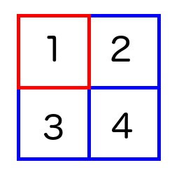
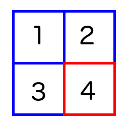
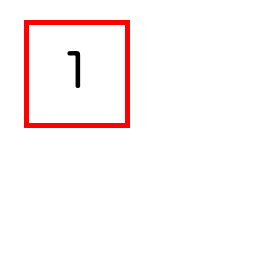
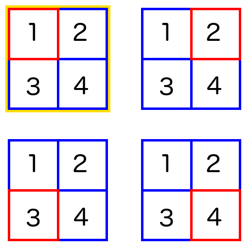
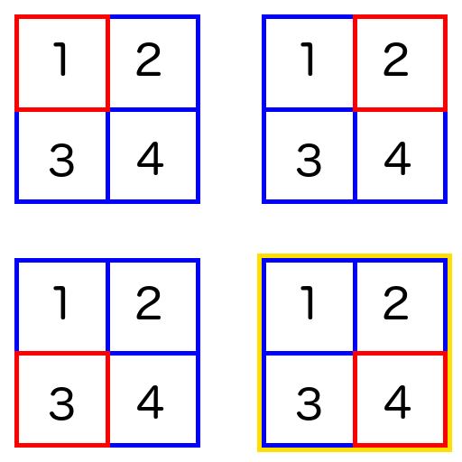
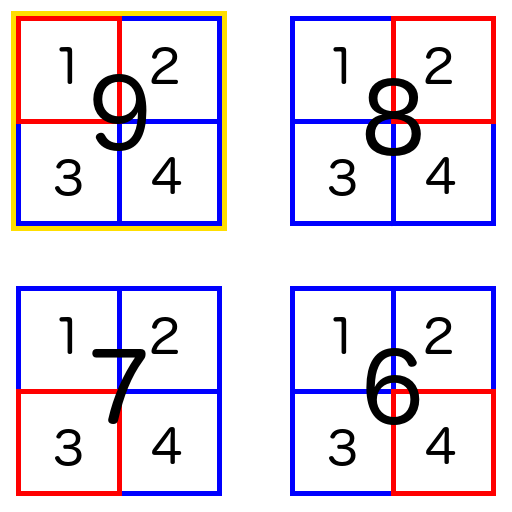
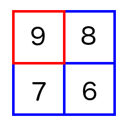

I’ve seen admonitions against writing Monad tutorials, but I haven’t seen the same about Comonad tutorials. It also struck me that Comonads in particular can be represented visually, and yet I usually see a wall of code whenever I see them discussed. So, here is an introduction to Comonads which focuses on a example in pictures.
What is a Comonad? You might think about them as structures which model context-dependence for inputs (as opposed to context-dependence for outputs, like a Monad). Or you might think about them as generalizations of some sort of set with a cursor. Or maybe you’d rather just focus on the functions involved: they are Functors which feature an extract / counit operation, with duplicate / cojoin and extend / cobind.
In this little intro, I’m going to use one specific example of a Comonad: a 2D array with a cursor at a point:

Of course, we could also move the cursor around:

The cursor determines the first Comonadic function, extract (or counit). If the cursor is at 1, we simply extract that value:

The next function is duplicate or cojoin. We want to represent all possible states of our Comonad, and we’ll use the same Comonad to do so:

We now have a 2D array of 2D arrays, each one with the cursor at a different spot. Of course, since the larger structure is also a Comonad, we need a cursor for it too, and that will take the place of the array we duplicated. If we had used duplicate on the array with the cursor on 4, for example, we’d end up with this:

In general, if we extract a value from the duplicated Comonad, we should end up with the same thing we started with.
Finally, a Comonad has an extend (cobind) function. This lets us take a function which returns a single value from the Comonad, and extend it to all the possible states. For example, let’s take a function which looks at a 2D array, finds the cells which neighbour the cursor, and sums them up. So our friend
would become the integer 9. But what if we want to replace the contents of the cells, and end up with an array of sums instead of a single number? If we extend that function to the duplicated Comonad:

w a -> b, from Cursor at 1we repeat the process for each possible location of the cursor. But because duplicate put us into a Comonad of Comonads, once we reduce each of the inner arrays to a single number, we have a plain cursored array of numbers to end with:

And that’s it! If you must have a homework problem, think about the following: what would happen if we extended the identity function?